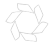

<div id="content">
  <mat-toolbar color="primary">
    <mat-toolbar-row class="container">
      <a routerLink="" class="d-flex justify-content-center" fxLayoutAlign="center center">
        
      </a>
      <span fxFlex="1 1 auto"></span>
      <button mat-raised-button routerLink="/auth" class="">Entrar</button>
    </mat-toolbar-row>
  </mat-toolbar>

  <main>
    <router-outlet></router-outlet>
  </main>
</div>
